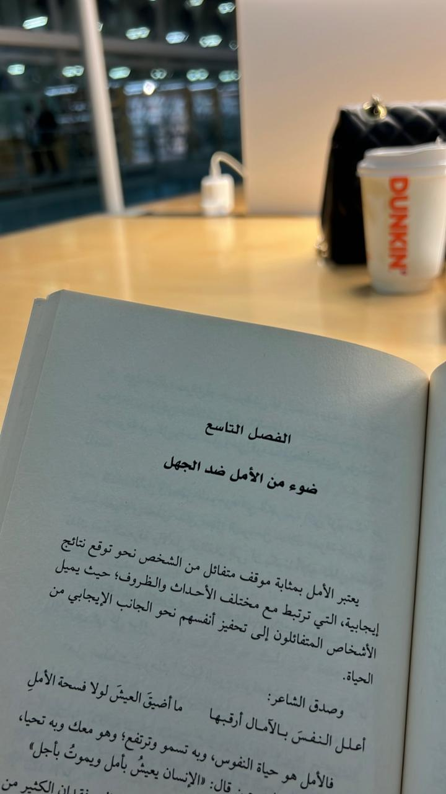
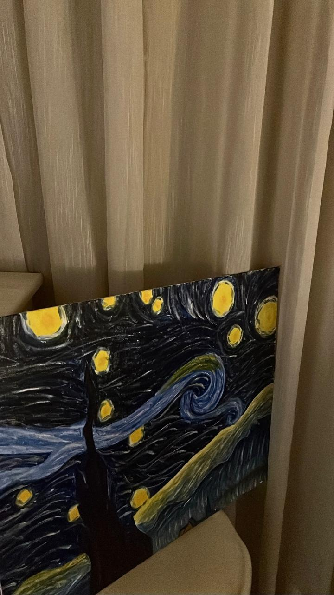
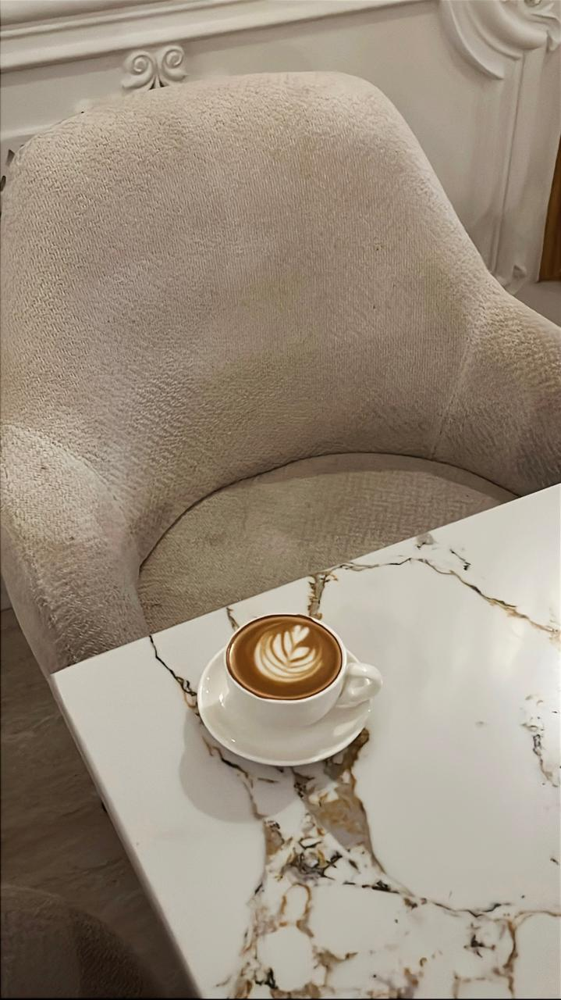

العمل الأول: عمل ثقافي - القراءة
خصصت وقتاً للقراءة في كتاب عن الأمل، وتأملت في أفكاره وكتبت ما استفدته منه. عمل ثقافي قمت به بنفسي.
النتيجة: تأمل وفائدة حقيقيةثلاثة أعمال حقيقية قمت بها
قراءة، رسم، ولحظة هدوء
أعمال صدقية من حياتي
خصصت وقتاً للقراءة في كتاب عن الأمل، وتأملت في أفكاره وكتبت ما استفدته منه. عمل ثقافي قمت به بنفسي.
النتيجة: تأمل وفائدة حقيقية
رسمت لوحة ليلة النجوم بيدي، ركزت على الألوان وحركة الفرشاة حتى اكتملت اللوحة كما تخيلتها.
النتيجة: لوحة مكتملة بيدي
اخترت مكاناً هادئاً لأجلس فيه بهدوء، وأستمتع بلحظة راحة وتأمل بعيداً عن الضجيج. لحظة اخترتها لنفسي.
النتيجة: راحة وهدوء حقيقي